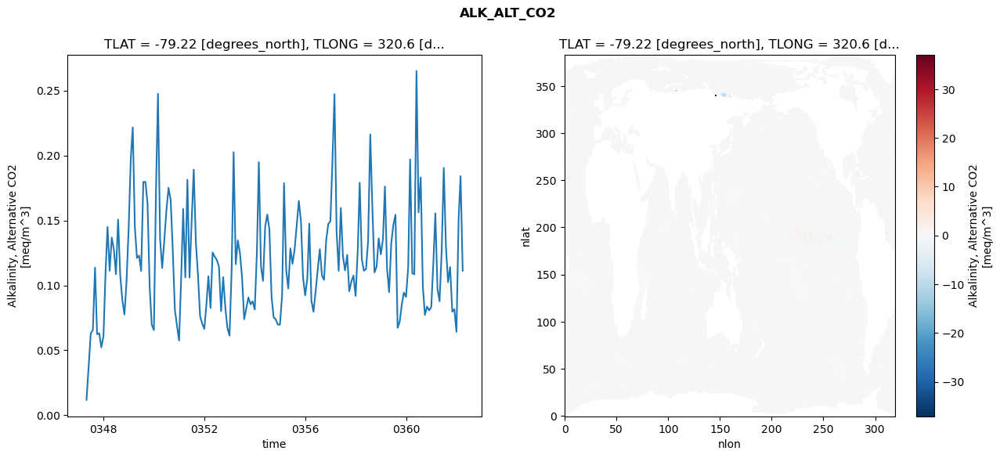
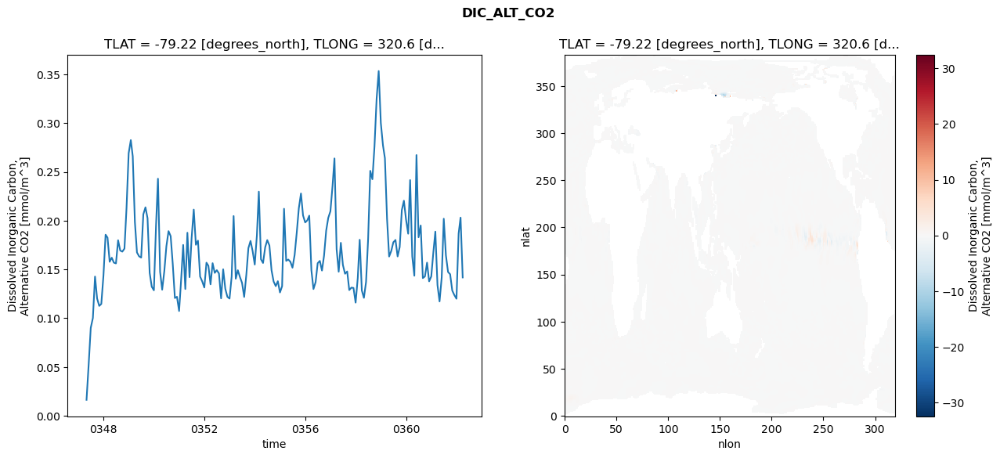
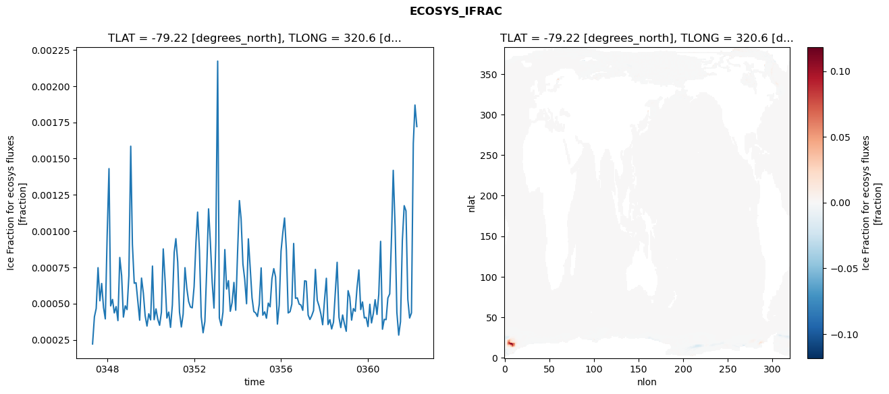
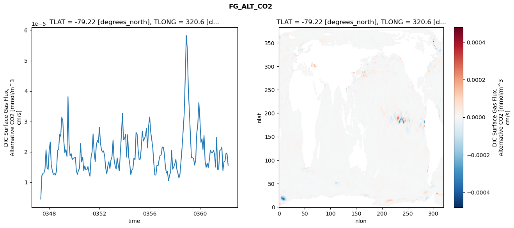

glb-dor_North_Atlantic_basin_007_1999-04-01_00029#
Simulation details#
Case: smyle.cdr-atlas-v0.glb-dor_North_Atlantic_basin_007_1999-04-01_00029.001
Basin: North_Atlantic_basin
Polygon: 7.0
Start date: 1999-04
Show code cell source Hide code cell source
import xarray as xr
import matplotlib.pyplot as plt
Show code cell source Hide code cell source
zarr_store = "/path/to/zarr/store"
# Parameters
zarr_store = "/global/cfs/projectdirs/m4746/Projects/Ocean-CDR-Atlas-v0/data/validation/smyle.cdr-atlas-v0.glb-dor_North_Atlantic_basin_007_1999-04-01_00029.001.validation.zarr"
Show code cell source Hide code cell source
%%time
ds_o = xr.open_zarr(zarr_store).compute()
ds_o
CPU times: user 697 ms, sys: 445 ms, total: 1.14 s
Wall time: 1.31 s
<xarray.Dataset> Size: 2MB
Dimensions: (nlat: 384, nlon: 320, time: 180)
Coordinates:
TLAT float64 8B -79.22
TLONG float64 8B 320.6
ULAT float64 8B -78.95
ULONG float64 8B 321.1
* time (time) object 1kB 0347-05-01 00:00:00 ... 0362-04-01 0...
z_t float32 4B 500.0
Dimensions without coordinates: nlat, nlon
Data variables:
ALK_ALT_CO2_diff (nlat, nlon) float32 492kB nan nan nan ... nan nan nan
ALK_ALT_CO2_rmse (time) float64 1kB 0.01186 0.03793 ... 0.1841 0.1113
DIC_ALT_CO2_diff (nlat, nlon) float32 492kB nan nan nan ... nan nan nan
DIC_ALT_CO2_rmse (time) float64 1kB 0.01632 0.05257 ... 0.2031 0.1418
ECOSYS_IFRAC_diff (nlat, nlon) float32 492kB nan nan nan ... nan nan nan
ECOSYS_IFRAC_rmse (time) float64 1kB 0.0002211 0.000408 ... 0.00172
FG_ALT_CO2_diff (nlat, nlon) float32 492kB nan nan nan ... nan nan nan
FG_ALT_CO2_rmse (time) float64 1kB 4.48e-06 1.216e-05 ... 1.558e-05xarray.Dataset
- nlat: 384
- nlon: 320
- time: 180
- TLAT()float64-79.22
- long_name :
- array of t-grid latitudes
- units :
- degrees_north
array(-79.22052261)
- TLONG()float64320.6
- long_name :
- array of t-grid longitudes
- units :
- degrees_east
array(320.56250892)
- ULAT()float64-78.95
- long_name :
- array of u-grid latitudes
- units :
- degrees_north
array(-78.95289509)
- ULONG()float64321.1
- long_name :
- array of u-grid longitudes
- units :
- degrees_east
array(321.12500894)
- time(time)object0347-05-01 00:00:00 ... 0362-04-...
- bounds :
- time_bound
- long_name :
- time
array([cftime.DatetimeNoLeap(347, 5, 1, 0, 0, 0, 0, has_year_zero=True), cftime.DatetimeNoLeap(347, 6, 1, 0, 0, 0, 0, has_year_zero=True), cftime.DatetimeNoLeap(347, 7, 1, 0, 0, 0, 0, has_year_zero=True), cftime.DatetimeNoLeap(347, 8, 1, 0, 0, 0, 0, has_year_zero=True), cftime.DatetimeNoLeap(347, 9, 1, 0, 0, 0, 0, has_year_zero=True), cftime.DatetimeNoLeap(347, 10, 1, 0, 0, 0, 0, has_year_zero=True), cftime.DatetimeNoLeap(347, 11, 1, 0, 0, 0, 0, has_year_zero=True), cftime.DatetimeNoLeap(347, 12, 1, 0, 0, 0, 0, has_year_zero=True), cftime.DatetimeNoLeap(348, 1, 1, 0, 0, 0, 0, has_year_zero=True), cftime.DatetimeNoLeap(348, 2, 1, 0, 0, 0, 0, has_year_zero=True), cftime.DatetimeNoLeap(348, 3, 1, 0, 0, 0, 0, has_year_zero=True), cftime.DatetimeNoLeap(348, 4, 1, 0, 0, 0, 0, has_year_zero=True), cftime.DatetimeNoLeap(348, 5, 1, 0, 0, 0, 0, has_year_zero=True), cftime.DatetimeNoLeap(348, 6, 1, 0, 0, 0, 0, has_year_zero=True), cftime.DatetimeNoLeap(348, 7, 1, 0, 0, 0, 0, has_year_zero=True), cftime.DatetimeNoLeap(348, 8, 1, 0, 0, 0, 0, has_year_zero=True), cftime.DatetimeNoLeap(348, 9, 1, 0, 0, 0, 0, has_year_zero=True), cftime.DatetimeNoLeap(348, 10, 1, 0, 0, 0, 0, has_year_zero=True), cftime.DatetimeNoLeap(348, 11, 1, 0, 0, 0, 0, has_year_zero=True), cftime.DatetimeNoLeap(348, 12, 1, 0, 0, 0, 0, has_year_zero=True), cftime.DatetimeNoLeap(349, 1, 1, 0, 0, 0, 0, has_year_zero=True), cftime.DatetimeNoLeap(349, 2, 1, 0, 0, 0, 0, has_year_zero=True), cftime.DatetimeNoLeap(349, 3, 1, 0, 0, 0, 0, has_year_zero=True), cftime.DatetimeNoLeap(349, 4, 1, 0, 0, 0, 0, has_year_zero=True), cftime.DatetimeNoLeap(349, 5, 1, 0, 0, 0, 0, has_year_zero=True), cftime.DatetimeNoLeap(349, 6, 1, 0, 0, 0, 0, has_year_zero=True), cftime.DatetimeNoLeap(349, 7, 1, 0, 0, 0, 0, has_year_zero=True), cftime.DatetimeNoLeap(349, 8, 1, 0, 0, 0, 0, has_year_zero=True), cftime.DatetimeNoLeap(349, 9, 1, 0, 0, 0, 0, has_year_zero=True), cftime.DatetimeNoLeap(349, 10, 1, 0, 0, 0, 0, has_year_zero=True), cftime.DatetimeNoLeap(349, 11, 1, 0, 0, 0, 0, has_year_zero=True), cftime.DatetimeNoLeap(349, 12, 1, 0, 0, 0, 0, has_year_zero=True), cftime.DatetimeNoLeap(350, 1, 1, 0, 0, 0, 0, has_year_zero=True), cftime.DatetimeNoLeap(350, 2, 1, 0, 0, 0, 0, has_year_zero=True), cftime.DatetimeNoLeap(350, 3, 1, 0, 0, 0, 0, has_year_zero=True), cftime.DatetimeNoLeap(350, 4, 1, 0, 0, 0, 0, has_year_zero=True), cftime.DatetimeNoLeap(350, 5, 1, 0, 0, 0, 0, has_year_zero=True), cftime.DatetimeNoLeap(350, 6, 1, 0, 0, 0, 0, has_year_zero=True), cftime.DatetimeNoLeap(350, 7, 1, 0, 0, 0, 0, has_year_zero=True), cftime.DatetimeNoLeap(350, 8, 1, 0, 0, 0, 0, has_year_zero=True), cftime.DatetimeNoLeap(350, 9, 1, 0, 0, 0, 0, has_year_zero=True), cftime.DatetimeNoLeap(350, 10, 1, 0, 0, 0, 0, has_year_zero=True), cftime.DatetimeNoLeap(350, 11, 1, 0, 0, 0, 0, has_year_zero=True), cftime.DatetimeNoLeap(350, 12, 1, 0, 0, 0, 0, has_year_zero=True), cftime.DatetimeNoLeap(351, 1, 1, 0, 0, 0, 0, has_year_zero=True), cftime.DatetimeNoLeap(351, 2, 1, 0, 0, 0, 0, has_year_zero=True), cftime.DatetimeNoLeap(351, 3, 1, 0, 0, 0, 0, has_year_zero=True), cftime.DatetimeNoLeap(351, 4, 1, 0, 0, 0, 0, has_year_zero=True), cftime.DatetimeNoLeap(351, 5, 1, 0, 0, 0, 0, has_year_zero=True), cftime.DatetimeNoLeap(351, 6, 1, 0, 0, 0, 0, has_year_zero=True), cftime.DatetimeNoLeap(351, 7, 1, 0, 0, 0, 0, has_year_zero=True), cftime.DatetimeNoLeap(351, 8, 1, 0, 0, 0, 0, has_year_zero=True), cftime.DatetimeNoLeap(351, 9, 1, 0, 0, 0, 0, has_year_zero=True), cftime.DatetimeNoLeap(351, 10, 1, 0, 0, 0, 0, has_year_zero=True), cftime.DatetimeNoLeap(351, 11, 1, 0, 0, 0, 0, has_year_zero=True), cftime.DatetimeNoLeap(351, 12, 1, 0, 0, 0, 0, has_year_zero=True), cftime.DatetimeNoLeap(352, 1, 1, 0, 0, 0, 0, has_year_zero=True), cftime.DatetimeNoLeap(352, 2, 1, 0, 0, 0, 0, has_year_zero=True), cftime.DatetimeNoLeap(352, 3, 1, 0, 0, 0, 0, has_year_zero=True), cftime.DatetimeNoLeap(352, 4, 1, 0, 0, 0, 0, has_year_zero=True), cftime.DatetimeNoLeap(352, 5, 1, 0, 0, 0, 0, has_year_zero=True), cftime.DatetimeNoLeap(352, 6, 1, 0, 0, 0, 0, has_year_zero=True), cftime.DatetimeNoLeap(352, 7, 1, 0, 0, 0, 0, has_year_zero=True), cftime.DatetimeNoLeap(352, 8, 1, 0, 0, 0, 0, has_year_zero=True), cftime.DatetimeNoLeap(352, 9, 1, 0, 0, 0, 0, has_year_zero=True), cftime.DatetimeNoLeap(352, 10, 1, 0, 0, 0, 0, has_year_zero=True), cftime.DatetimeNoLeap(352, 11, 1, 0, 0, 0, 0, has_year_zero=True), cftime.DatetimeNoLeap(352, 12, 1, 0, 0, 0, 0, has_year_zero=True), cftime.DatetimeNoLeap(353, 1, 1, 0, 0, 0, 0, has_year_zero=True), cftime.DatetimeNoLeap(353, 2, 1, 0, 0, 0, 0, has_year_zero=True), cftime.DatetimeNoLeap(353, 3, 1, 0, 0, 0, 0, has_year_zero=True), cftime.DatetimeNoLeap(353, 4, 1, 0, 0, 0, 0, has_year_zero=True), cftime.DatetimeNoLeap(353, 5, 1, 0, 0, 0, 0, has_year_zero=True), cftime.DatetimeNoLeap(353, 6, 1, 0, 0, 0, 0, has_year_zero=True), cftime.DatetimeNoLeap(353, 7, 1, 0, 0, 0, 0, has_year_zero=True), cftime.DatetimeNoLeap(353, 8, 1, 0, 0, 0, 0, has_year_zero=True), cftime.DatetimeNoLeap(353, 9, 1, 0, 0, 0, 0, has_year_zero=True), cftime.DatetimeNoLeap(353, 10, 1, 0, 0, 0, 0, has_year_zero=True), cftime.DatetimeNoLeap(353, 11, 1, 0, 0, 0, 0, has_year_zero=True), cftime.DatetimeNoLeap(353, 12, 1, 0, 0, 0, 0, has_year_zero=True), cftime.DatetimeNoLeap(354, 1, 1, 0, 0, 0, 0, has_year_zero=True), cftime.DatetimeNoLeap(354, 2, 1, 0, 0, 0, 0, has_year_zero=True), cftime.DatetimeNoLeap(354, 3, 1, 0, 0, 0, 0, has_year_zero=True), cftime.DatetimeNoLeap(354, 4, 1, 0, 0, 0, 0, has_year_zero=True), cftime.DatetimeNoLeap(354, 5, 1, 0, 0, 0, 0, has_year_zero=True), cftime.DatetimeNoLeap(354, 6, 1, 0, 0, 0, 0, has_year_zero=True), cftime.DatetimeNoLeap(354, 7, 1, 0, 0, 0, 0, has_year_zero=True), cftime.DatetimeNoLeap(354, 8, 1, 0, 0, 0, 0, has_year_zero=True), cftime.DatetimeNoLeap(354, 9, 1, 0, 0, 0, 0, has_year_zero=True), cftime.DatetimeNoLeap(354, 10, 1, 0, 0, 0, 0, has_year_zero=True), cftime.DatetimeNoLeap(354, 11, 1, 0, 0, 0, 0, has_year_zero=True), cftime.DatetimeNoLeap(354, 12, 1, 0, 0, 0, 0, has_year_zero=True), cftime.DatetimeNoLeap(355, 1, 1, 0, 0, 0, 0, has_year_zero=True), cftime.DatetimeNoLeap(355, 2, 1, 0, 0, 0, 0, has_year_zero=True), cftime.DatetimeNoLeap(355, 3, 1, 0, 0, 0, 0, has_year_zero=True), cftime.DatetimeNoLeap(355, 4, 1, 0, 0, 0, 0, has_year_zero=True), cftime.DatetimeNoLeap(355, 5, 1, 0, 0, 0, 0, has_year_zero=True), cftime.DatetimeNoLeap(355, 6, 1, 0, 0, 0, 0, has_year_zero=True), cftime.DatetimeNoLeap(355, 7, 1, 0, 0, 0, 0, has_year_zero=True), cftime.DatetimeNoLeap(355, 8, 1, 0, 0, 0, 0, has_year_zero=True), cftime.DatetimeNoLeap(355, 9, 1, 0, 0, 0, 0, has_year_zero=True), cftime.DatetimeNoLeap(355, 10, 1, 0, 0, 0, 0, has_year_zero=True), cftime.DatetimeNoLeap(355, 11, 1, 0, 0, 0, 0, has_year_zero=True), cftime.DatetimeNoLeap(355, 12, 1, 0, 0, 0, 0, has_year_zero=True), cftime.DatetimeNoLeap(356, 1, 1, 0, 0, 0, 0, has_year_zero=True), cftime.DatetimeNoLeap(356, 2, 1, 0, 0, 0, 0, has_year_zero=True), cftime.DatetimeNoLeap(356, 3, 1, 0, 0, 0, 0, has_year_zero=True), cftime.DatetimeNoLeap(356, 4, 1, 0, 0, 0, 0, has_year_zero=True), cftime.DatetimeNoLeap(356, 5, 1, 0, 0, 0, 0, has_year_zero=True), cftime.DatetimeNoLeap(356, 6, 1, 0, 0, 0, 0, has_year_zero=True), cftime.DatetimeNoLeap(356, 7, 1, 0, 0, 0, 0, has_year_zero=True), cftime.DatetimeNoLeap(356, 8, 1, 0, 0, 0, 0, has_year_zero=True), cftime.DatetimeNoLeap(356, 9, 1, 0, 0, 0, 0, has_year_zero=True), cftime.DatetimeNoLeap(356, 10, 1, 0, 0, 0, 0, has_year_zero=True), cftime.DatetimeNoLeap(356, 11, 1, 0, 0, 0, 0, has_year_zero=True), cftime.DatetimeNoLeap(356, 12, 1, 0, 0, 0, 0, has_year_zero=True), cftime.DatetimeNoLeap(357, 1, 1, 0, 0, 0, 0, has_year_zero=True), cftime.DatetimeNoLeap(357, 2, 1, 0, 0, 0, 0, has_year_zero=True), cftime.DatetimeNoLeap(357, 3, 1, 0, 0, 0, 0, has_year_zero=True), cftime.DatetimeNoLeap(357, 4, 1, 0, 0, 0, 0, has_year_zero=True), cftime.DatetimeNoLeap(357, 5, 1, 0, 0, 0, 0, has_year_zero=True), cftime.DatetimeNoLeap(357, 6, 1, 0, 0, 0, 0, has_year_zero=True), cftime.DatetimeNoLeap(357, 7, 1, 0, 0, 0, 0, has_year_zero=True), cftime.DatetimeNoLeap(357, 8, 1, 0, 0, 0, 0, has_year_zero=True), cftime.DatetimeNoLeap(357, 9, 1, 0, 0, 0, 0, has_year_zero=True), cftime.DatetimeNoLeap(357, 10, 1, 0, 0, 0, 0, has_year_zero=True), cftime.DatetimeNoLeap(357, 11, 1, 0, 0, 0, 0, has_year_zero=True), cftime.DatetimeNoLeap(357, 12, 1, 0, 0, 0, 0, has_year_zero=True), cftime.DatetimeNoLeap(358, 1, 1, 0, 0, 0, 0, has_year_zero=True), cftime.DatetimeNoLeap(358, 2, 1, 0, 0, 0, 0, has_year_zero=True), cftime.DatetimeNoLeap(358, 3, 1, 0, 0, 0, 0, has_year_zero=True), cftime.DatetimeNoLeap(358, 4, 1, 0, 0, 0, 0, has_year_zero=True), cftime.DatetimeNoLeap(358, 5, 1, 0, 0, 0, 0, has_year_zero=True), cftime.DatetimeNoLeap(358, 6, 1, 0, 0, 0, 0, has_year_zero=True), cftime.DatetimeNoLeap(358, 7, 1, 0, 0, 0, 0, has_year_zero=True), cftime.DatetimeNoLeap(358, 8, 1, 0, 0, 0, 0, has_year_zero=True), cftime.DatetimeNoLeap(358, 9, 1, 0, 0, 0, 0, has_year_zero=True), cftime.DatetimeNoLeap(358, 10, 1, 0, 0, 0, 0, has_year_zero=True), cftime.DatetimeNoLeap(358, 11, 1, 0, 0, 0, 0, has_year_zero=True), cftime.DatetimeNoLeap(358, 12, 1, 0, 0, 0, 0, has_year_zero=True), cftime.DatetimeNoLeap(359, 1, 1, 0, 0, 0, 0, has_year_zero=True), cftime.DatetimeNoLeap(359, 2, 1, 0, 0, 0, 0, has_year_zero=True), cftime.DatetimeNoLeap(359, 3, 1, 0, 0, 0, 0, has_year_zero=True), cftime.DatetimeNoLeap(359, 4, 1, 0, 0, 0, 0, has_year_zero=True), cftime.DatetimeNoLeap(359, 5, 1, 0, 0, 0, 0, has_year_zero=True), cftime.DatetimeNoLeap(359, 6, 1, 0, 0, 0, 0, has_year_zero=True), cftime.DatetimeNoLeap(359, 7, 1, 0, 0, 0, 0, has_year_zero=True), cftime.DatetimeNoLeap(359, 8, 1, 0, 0, 0, 0, has_year_zero=True), cftime.DatetimeNoLeap(359, 9, 1, 0, 0, 0, 0, has_year_zero=True), cftime.DatetimeNoLeap(359, 10, 1, 0, 0, 0, 0, has_year_zero=True), cftime.DatetimeNoLeap(359, 11, 1, 0, 0, 0, 0, has_year_zero=True), cftime.DatetimeNoLeap(359, 12, 1, 0, 0, 0, 0, has_year_zero=True), cftime.DatetimeNoLeap(360, 1, 1, 0, 0, 0, 0, has_year_zero=True), cftime.DatetimeNoLeap(360, 2, 1, 0, 0, 0, 0, has_year_zero=True), cftime.DatetimeNoLeap(360, 3, 1, 0, 0, 0, 0, has_year_zero=True), cftime.DatetimeNoLeap(360, 4, 1, 0, 0, 0, 0, has_year_zero=True), cftime.DatetimeNoLeap(360, 5, 1, 0, 0, 0, 0, has_year_zero=True), cftime.DatetimeNoLeap(360, 6, 1, 0, 0, 0, 0, has_year_zero=True), cftime.DatetimeNoLeap(360, 7, 1, 0, 0, 0, 0, has_year_zero=True), cftime.DatetimeNoLeap(360, 8, 1, 0, 0, 0, 0, has_year_zero=True), cftime.DatetimeNoLeap(360, 9, 1, 0, 0, 0, 0, has_year_zero=True), cftime.DatetimeNoLeap(360, 10, 1, 0, 0, 0, 0, has_year_zero=True), cftime.DatetimeNoLeap(360, 11, 1, 0, 0, 0, 0, has_year_zero=True), cftime.DatetimeNoLeap(360, 12, 1, 0, 0, 0, 0, has_year_zero=True), cftime.DatetimeNoLeap(361, 1, 1, 0, 0, 0, 0, has_year_zero=True), cftime.DatetimeNoLeap(361, 2, 1, 0, 0, 0, 0, has_year_zero=True), cftime.DatetimeNoLeap(361, 3, 1, 0, 0, 0, 0, has_year_zero=True), cftime.DatetimeNoLeap(361, 4, 1, 0, 0, 0, 0, has_year_zero=True), cftime.DatetimeNoLeap(361, 5, 1, 0, 0, 0, 0, has_year_zero=True), cftime.DatetimeNoLeap(361, 6, 1, 0, 0, 0, 0, has_year_zero=True), cftime.DatetimeNoLeap(361, 7, 1, 0, 0, 0, 0, has_year_zero=True), cftime.DatetimeNoLeap(361, 8, 1, 0, 0, 0, 0, has_year_zero=True), cftime.DatetimeNoLeap(361, 9, 1, 0, 0, 0, 0, has_year_zero=True), cftime.DatetimeNoLeap(361, 10, 1, 0, 0, 0, 0, has_year_zero=True), cftime.DatetimeNoLeap(361, 11, 1, 0, 0, 0, 0, has_year_zero=True), cftime.DatetimeNoLeap(361, 12, 1, 0, 0, 0, 0, has_year_zero=True), cftime.DatetimeNoLeap(362, 1, 1, 0, 0, 0, 0, has_year_zero=True), cftime.DatetimeNoLeap(362, 2, 1, 0, 0, 0, 0, has_year_zero=True), cftime.DatetimeNoLeap(362, 3, 1, 0, 0, 0, 0, has_year_zero=True), cftime.DatetimeNoLeap(362, 4, 1, 0, 0, 0, 0, has_year_zero=True)], dtype=object) - z_t()float32500.0
- long_name :
- depth from surface to midpoint of layer
- positive :
- down
- units :
- centimeters
- valid_max :
- 537500.0
- valid_min :
- 500.0
array(500., dtype=float32)
- ALK_ALT_CO2_diff(nlat, nlon)float32nan nan nan nan ... nan nan nan nan
- cell_methods :
- time: mean
- grid_loc :
- 3111
- long_name :
- Alkalinity, Alternative CO2
- units :
- meq/m^3
array([[ nan, nan, nan, ..., nan, nan, nan], [ nan, nan, nan, ..., nan, nan, nan], [0.0534668 , 0.05712891, 0.06518555, ..., nan, nan, nan], ..., [ nan, nan, nan, ..., nan, nan, nan], [ nan, nan, nan, ..., nan, nan, nan], [ nan, nan, nan, ..., nan, nan, nan]], dtype=float32) - ALK_ALT_CO2_rmse(time)float640.01186 0.03793 ... 0.1841 0.1113
- cell_methods :
- time: mean
- grid_loc :
- 3111
- long_name :
- Alkalinity, Alternative CO2
- units :
- meq/m^3
array([0.01185525, 0.03792927, 0.06296542, 0.06571704, 0.11369171, 0.06238688, 0.06311258, 0.05227755, 0.0607716 , 0.11112272, 0.1449543 , 0.11124328, 0.13679905, 0.12750901, 0.10860291, 0.15066424, 0.10755497, 0.08892589, 0.07758492, 0.1031114 , 0.14405142, 0.19805836, 0.2216542 , 0.14430395, 0.12110267, 0.12291352, 0.11105881, 0.17962987, 0.17965495, 0.16322564, 0.098565 , 0.06965224, 0.06557236, 0.17451637, 0.24747215, 0.13551386, 0.11340893, 0.13490373, 0.1575596 , 0.17507948, 0.16563141, 0.12759064, 0.0809035 , 0.06907336, 0.05755558, 0.10749469, 0.15882177, 0.10616681, 0.18133066, 0.10601753, 0.14892039, 0.1891472 , 0.13264235, 0.10839838, 0.07623632, 0.07059633, 0.06653565, 0.08589807, 0.10704702, 0.08259645, 0.12537712, 0.12208394, 0.11950803, 0.11437839, 0.08011113, 0.10631256, 0.08303364, 0.06723454, 0.06135824, 0.11284041, 0.20252318, 0.1162233 , 0.1346261 , 0.12486629, 0.10617681, 0.07394817, 0.08257453, 0.09064241, 0.08534399, 0.08778504, 0.08144215, 0.12542177, 0.194878 , 0.11443883, 0.10346915, 0.14536374, 0.15453733, 0.14301669, 0.09165984, 0.07543993, 0.07381908, 0.06985037, 0.06975279, 0.09254486, 0.17864142, 0.11200322, 0.09758294, 0.12838636, 0.11660556, 0.12772452, 0.14693802, 0.16509015, 0.14905325, 0.10589786, 0.09232347, 0.10518002, 0.14755732, 0.08834248, 0.0796984 , 0.09503778, 0.11180511, 0.12785647, 0.10760471, 0.10426331, 0.13483672, 0.14721544, 0.14941149, 0.19845948, 0.24721317, 0.1409016 , 0.11117226, 0.15957133, 0.12290416, 0.11152783, 0.12346428, 0.09550246, 0.10316314, 0.10754929, 0.09186009, 0.12722364, 0.17907035, 0.12022162, 0.11122641, 0.11267904, 0.13437872, 0.21622484, 0.15923835, 0.10995124, 0.11438593, 0.13622771, 0.12393078, 0.13585789, 0.1760966 , 0.11313041, 0.09477956, 0.13272403, 0.14654195, 0.15426449, 0.06728068, 0.07204366, 0.08555204, 0.09447767, 0.0911391 , 0.11413335, 0.19700676, 0.10928576, 0.10853066, 0.26504394, 0.15618262, 0.18316983, 0.09928776, 0.07723221, 0.08367045, 0.08073584, 0.08340415, 0.11828039, 0.15546644, 0.09723441, 0.08781468, 0.12672696, 0.19045365, 0.1301533 , 0.1024415 , 0.11410121, 0.07975376, 0.08163326, 0.06424753, 0.1514059 , 0.18408898, 0.11127704]) - DIC_ALT_CO2_diff(nlat, nlon)float32nan nan nan nan ... nan nan nan nan
- cell_methods :
- time: mean
- grid_loc :
- 3111
- long_name :
- Dissolved Inorganic Carbon, Alternative CO2
- units :
- mmol/m^3
array([[ nan, nan, nan, ..., nan, nan, nan], [ nan, nan, nan, ..., nan, nan, nan], [0.04858398, 0.04589844, 0.04931641, ..., nan, nan, nan], ..., [ nan, nan, nan, ..., nan, nan, nan], [ nan, nan, nan, ..., nan, nan, nan], [ nan, nan, nan, ..., nan, nan, nan]], dtype=float32) - DIC_ALT_CO2_rmse(time)float640.01632 0.05257 ... 0.2031 0.1418
- cell_methods :
- time: mean
- grid_loc :
- 3111
- long_name :
- Dissolved Inorganic Carbon, Alternative CO2
- units :
- mmol/m^3
array([0.01631846, 0.05257427, 0.09006591, 0.10023068, 0.14271399, 0.12023161, 0.11263012, 0.11466454, 0.14379628, 0.18561074, 0.18258708, 0.15785194, 0.16205559, 0.15695429, 0.15617402, 0.17992612, 0.16938058, 0.16824608, 0.17135949, 0.21308652, 0.26921424, 0.28260264, 0.26606426, 0.19864689, 0.16744303, 0.1634371 , 0.16214198, 0.20650571, 0.21370013, 0.20253297, 0.14645012, 0.13230776, 0.12860295, 0.19491785, 0.24303177, 0.14752118, 0.12924905, 0.14829921, 0.173796 , 0.18928675, 0.18414172, 0.15570186, 0.12070226, 0.12199021, 0.10739574, 0.14129183, 0.17514229, 0.12993784, 0.18763673, 0.14208129, 0.18217212, 0.21138387, 0.17527839, 0.1795295 , 0.14267713, 0.13784197, 0.13148355, 0.15694259, 0.15374696, 0.13473051, 0.15640352, 0.1464896 , 0.14922153, 0.14586867, 0.12035513, 0.15014063, 0.13011135, 0.12190435, 0.12015161, 0.14291454, 0.20476268, 0.14051618, 0.14921127, 0.14216848, 0.13625342, 0.12181302, 0.14448294, 0.17189824, 0.17924088, 0.1689248 , 0.15500557, 0.18503851, 0.22975745, 0.16047756, 0.15662381, 0.17272235, 0.18010916, 0.17462035, 0.14915146, 0.13769973, 0.13288121, 0.13796628, 0.1263993 , 0.13282237, 0.21222236, 0.15878919, 0.16017327, 0.15783707, 0.15179363, 0.1647598 , 0.18788129, 0.21279613, 0.2278834 , 0.20534593, 0.19820411, 0.20035125, 0.20517328, 0.14907191, 0.12990674, 0.1370568 , 0.15642103, 0.1587645 , 0.14884354, 0.1641349 , 0.18986032, 0.2028734 , 0.20962387, 0.2356535 , 0.26381462, 0.17076781, 0.14767215, 0.17730502, 0.15456514, 0.14558896, 0.14797513, 0.12886122, 0.13137125, 0.13106681, 0.11601252, 0.14127237, 0.18044387, 0.12843419, 0.12088569, 0.13715583, 0.18117098, 0.2510972 , 0.24250182, 0.27600099, 0.32492143, 0.35341601, 0.30006852, 0.27718835, 0.26406595, 0.20172361, 0.16323855, 0.16900397, 0.17786183, 0.18024369, 0.16330888, 0.17296723, 0.21088286, 0.22046491, 0.20105389, 0.18663371, 0.24162595, 0.16325637, 0.14356544, 0.26728347, 0.18301728, 0.19504925, 0.14113523, 0.14283409, 0.15696403, 0.13779814, 0.14284978, 0.16821655, 0.18877992, 0.13396678, 0.11720521, 0.14168074, 0.20200689, 0.16441955, 0.14736572, 0.14510863, 0.12831657, 0.12374344, 0.11998293, 0.18683607, 0.20314462, 0.14179743]) - ECOSYS_IFRAC_diff(nlat, nlon)float32nan nan nan nan ... nan nan nan nan
- cell_methods :
- time: mean
- grid_loc :
- 2110
- long_name :
- Ice Fraction for ecosys fluxes
- units :
- fraction
array([[ nan, nan, nan, ..., nan, nan, nan], [ nan, nan, nan, ..., nan, nan, nan], [-0.00159723, -0.00104278, -0.00326174, ..., nan, nan, nan], ..., [ nan, nan, nan, ..., nan, nan, nan], [ nan, nan, nan, ..., nan, nan, nan], [ nan, nan, nan, ..., nan, nan, nan]], dtype=float32) - ECOSYS_IFRAC_rmse(time)float640.0002211 0.000408 ... 0.00172
- cell_methods :
- time: mean
- grid_loc :
- 2110
- long_name :
- Ice Fraction for ecosys fluxes
- units :
- fraction
array([0.0002211 , 0.00040803, 0.00046593, 0.00074713, 0.00051896, 0.00063814, 0.00047271, 0.00039418, 0.00096871, 0.00143036, 0.00048387, 0.00052839, 0.00043526, 0.00047917, 0.00038234, 0.0008175 , 0.00069338, 0.00040659, 0.00048407, 0.0004582 , 0.00069176, 0.00158496, 0.00090924, 0.00063987, 0.00064328, 0.00051234, 0.00038504, 0.00067563, 0.00057143, 0.00041658, 0.00034482, 0.00042934, 0.0003873 , 0.00075831, 0.00038852, 0.00046327, 0.00039218, 0.00035001, 0.00044012, 0.00087669, 0.00065895, 0.00039987, 0.00044124, 0.00033585, 0.00048923, 0.00085345, 0.00094721, 0.00078595, 0.00043994, 0.00033852, 0.00042682, 0.00074716, 0.00060429, 0.00051411, 0.00047596, 0.00047047, 0.00061613, 0.00091926, 0.00113058, 0.00086286, 0.00040819, 0.00029864, 0.00037597, 0.00073484, 0.0011528 , 0.0009245 , 0.00064462, 0.00046861, 0.00092186, 0.00217194, 0.0004016 , 0.00034796, 0.00044108, 0.00087208, 0.00059977, 0.00065748, 0.00044649, 0.00050625, 0.00064553, 0.00045385, 0.00085078, 0.00120984, 0.00108538, 0.00077231, 0.00066734, 0.00049864, 0.00094607, 0.00074679, 0.00053901, 0.00044496, 0.00043493, 0.00041061, 0.00049656, 0.00074577, 0.00041971, 0.00044254, 0.00039862, 0.00050288, 0.00047741, 0.00067045, 0.00074072, 0.00068376, 0.00035845, 0.00048906, 0.00086142, 0.00099366, 0.00108986, 0.0008665 , 0.00043524, 0.00044364, 0.00049575, 0.00091423, 0.0005359 , 0.00053901, 0.00049627, 0.00048997, 0.00045308, 0.0006569 , 0.00065385, 0.00042082, 0.00039013, 0.00041662, 0.00045131, 0.00073541, 0.00052261, 0.00048307, 0.00042815, 0.00035388, 0.00052369, 0.00067425, 0.00035536, 0.00038899, 0.00032463, 0.00037165, 0.00057689, 0.00078432, 0.00040483, 0.0003342 , 0.0004211 , 0.00035994, 0.00030882, 0.0005886 , 0.00054455, 0.00038541, 0.00046521, 0.00044633, 0.00060857, 0.0007317 , 0.00045831, 0.000511 , 0.00040088, 0.00040385, 0.00034118, 0.00049496, 0.00036636, 0.00043167, 0.00052638, 0.00042485, 0.00056142, 0.00092885, 0.00032294, 0.00039107, 0.00038885, 0.00053821, 0.00056656, 0.00097294, 0.0014185 , 0.00103341, 0.00043886, 0.00028215, 0.00037514, 0.00093406, 0.00117487, 0.00113916, 0.00052898, 0.00040012, 0.00043538, 0.00160499, 0.00186893, 0.00172032]) - FG_ALT_CO2_diff(nlat, nlon)float32nan nan nan nan ... nan nan nan nan
- cell_methods :
- time: mean
- grid_loc :
- 2110
- long_name :
- DIC Surface Gas Flux, Alternative CO2
- units :
- mmol/m^3 cm/s
array([[ nan, nan, nan, ..., nan, nan, nan], [ nan, nan, nan, ..., nan, nan, nan], [9.2079863e-06, 5.5980054e-06, 1.7498882e-05, ..., nan, nan, nan], ..., [ nan, nan, nan, ..., nan, nan, nan], [ nan, nan, nan, ..., nan, nan, nan], [ nan, nan, nan, ..., nan, nan, nan]], dtype=float32) - FG_ALT_CO2_rmse(time)float644.48e-06 1.216e-05 ... 1.558e-05
- cell_methods :
- time: mean
- grid_loc :
- 2110
- long_name :
- DIC Surface Gas Flux, Alternative CO2
- units :
- mmol/m^3 cm/s
array([4.47973632e-06, 1.21613205e-05, 1.28873624e-05, 1.31089119e-05, 1.43179762e-05, 2.06872005e-05, 1.47714707e-05, 1.42453810e-05, 2.07550492e-05, 2.32112080e-05, 1.57472892e-05, 1.38228370e-05, 1.26021753e-05, 1.28315282e-05, 1.23714149e-05, 1.37279602e-05, 2.04541911e-05, 2.07797045e-05, 2.57199583e-05, 2.51013819e-05, 3.14028221e-05, 3.00123021e-05, 2.35327233e-05, 1.96671671e-05, 2.08508234e-05, 1.85102710e-05, 3.81543977e-05, 2.25864508e-05, 1.86369052e-05, 1.94080239e-05, 1.74342767e-05, 1.79135113e-05, 1.79672365e-05, 1.82624885e-05, 1.37383503e-05, 1.25947855e-05, 1.39571229e-05, 1.45649620e-05, 2.27406526e-05, 1.66891916e-05, 1.82239499e-05, 1.38878696e-05, 1.53620371e-05, 1.41572674e-05, 1.40903312e-05, 1.51640534e-05, 1.34216264e-05, 1.19894075e-05, 1.80916522e-05, 2.00048934e-05, 2.58934304e-05, 1.97175601e-05, 1.67969244e-05, 2.20489510e-05, 2.37862166e-05, 2.30916575e-05, 2.80573718e-05, 2.27855029e-05, 2.06385253e-05, 1.99165005e-05, 2.02995279e-05, 1.86505246e-05, 1.47595693e-05, 1.27396371e-05, 1.53116940e-05, 1.67471816e-05, 1.44168791e-05, 1.72923430e-05, 1.84127243e-05, 2.38969922e-05, 1.77508105e-05, 1.54460071e-05, 1.43405749e-05, 1.79875775e-05, 1.56284169e-05, 1.37763547e-05, 1.99086571e-05, 2.55991195e-05, 3.26852652e-05, 2.39530812e-05, ... 2.53125512e-05, 2.77392081e-05, 2.13144742e-05, 2.84938734e-05, 3.14052120e-05, 2.64689657e-05, 2.41399864e-05, 2.13528697e-05, 1.63199758e-05, 1.23911909e-05, 1.23661964e-05, 1.56368237e-05, 1.53996458e-05, 1.73422289e-05, 1.88725231e-05, 1.89739525e-05, 2.15888813e-05, 2.14251521e-05, 1.96110624e-05, 1.53879922e-05, 1.30109343e-05, 1.35974748e-05, 1.04486263e-05, 1.22082863e-05, 1.34174010e-05, 2.04786767e-05, 1.43070010e-05, 1.50208620e-05, 1.60063606e-05, 1.75444586e-05, 1.43061308e-05, 1.29768872e-05, 1.14079458e-05, 1.27057831e-05, 1.69776629e-05, 2.14521825e-05, 2.71451860e-05, 3.24410721e-05, 4.45405489e-05, 5.83048179e-05, 5.35335976e-05, 3.96573844e-05, 3.34449724e-05, 2.50028938e-05, 1.80036248e-05, 1.80829649e-05, 1.77922865e-05, 1.56492498e-05, 1.73726775e-05, 2.60534901e-05, 2.90338791e-05, 3.62260524e-05, 3.06155349e-05, 2.31054114e-05, 2.43335068e-05, 2.07363986e-05, 2.53640579e-05, 1.69385895e-05, 1.49061302e-05, 1.62733713e-05, 1.48359739e-05, 1.72051693e-05, 2.05736655e-05, 1.98564515e-05, 1.96543857e-05, 2.05222898e-05, 1.93505922e-05, 1.50043626e-05, 2.47245016e-05, 1.41972397e-05, 1.43348672e-05, 2.04671237e-05, 2.06896009e-05, 2.15967241e-05, 1.38594209e-05, 1.67139574e-05, 1.70024351e-05, 1.96367462e-05, 1.92800074e-05, 1.55818309e-05])
- timePandasIndex
PandasIndex(CFTimeIndex([0347-05-01 00:00:00, 0347-06-01 00:00:00, 0347-07-01 00:00:00, 0347-08-01 00:00:00, 0347-09-01 00:00:00, 0347-10-01 00:00:00, 0347-11-01 00:00:00, 0347-12-01 00:00:00, 0348-01-01 00:00:00, 0348-02-01 00:00:00, ... 0361-07-01 00:00:00, 0361-08-01 00:00:00, 0361-09-01 00:00:00, 0361-10-01 00:00:00, 0361-11-01 00:00:00, 0361-12-01 00:00:00, 0362-01-01 00:00:00, 0362-02-01 00:00:00, 0362-03-01 00:00:00, 0362-04-01 00:00:00], dtype='object', length=180, calendar='noleap', freq='MS'))
Show code cell source Hide code cell source
variables = [v[:-5] for v in ds_o.variables if "_rmse" in v]
Show code cell source Hide code cell source
plt.rcParams.update({'figure.max_open_warning': 0})
for v in variables:
fig, axs = plt.subplots(1, 2, figsize=(15, 6))
ds_o[f"{v}_rmse"].plot(ax=axs[0])
ds_o[f"{v}_diff"].plot(ax=axs[1])
plt.suptitle(v, fontweight="bold")



